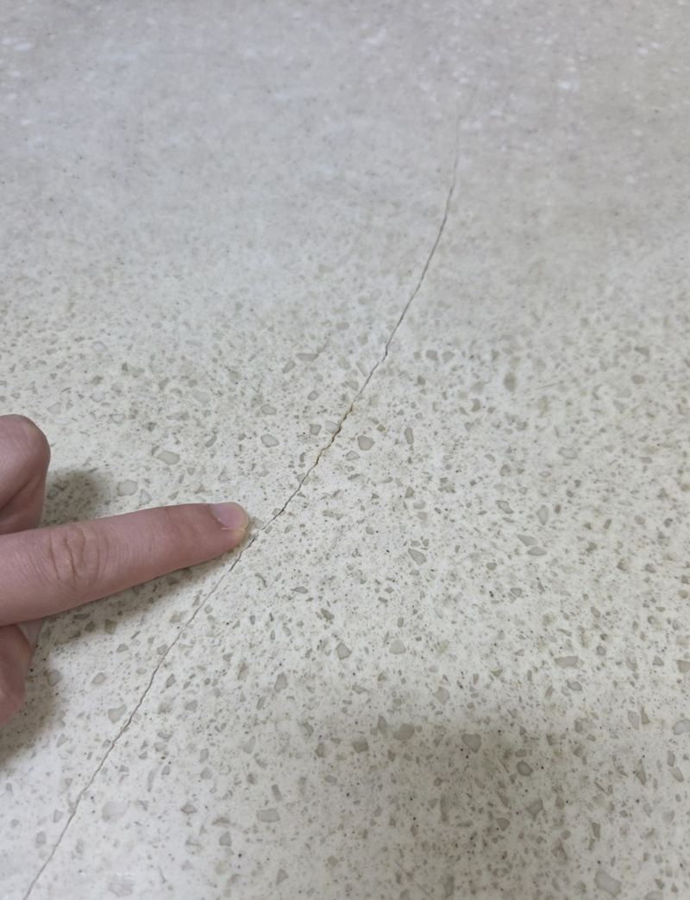
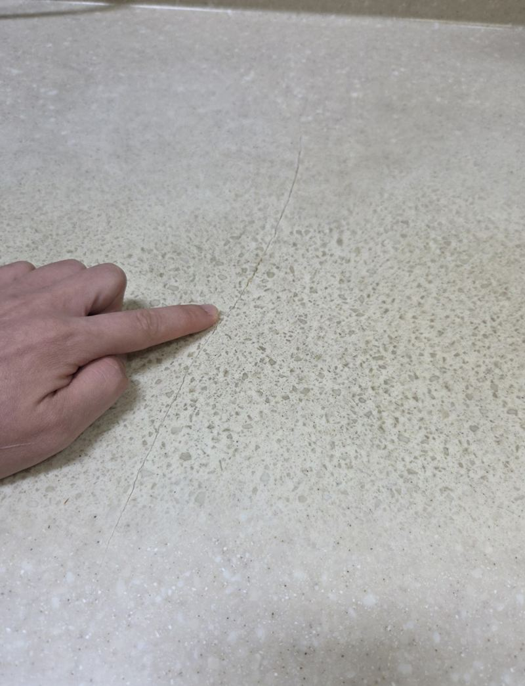
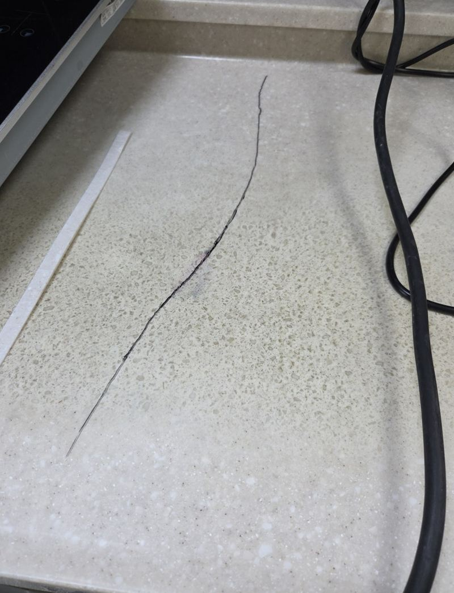
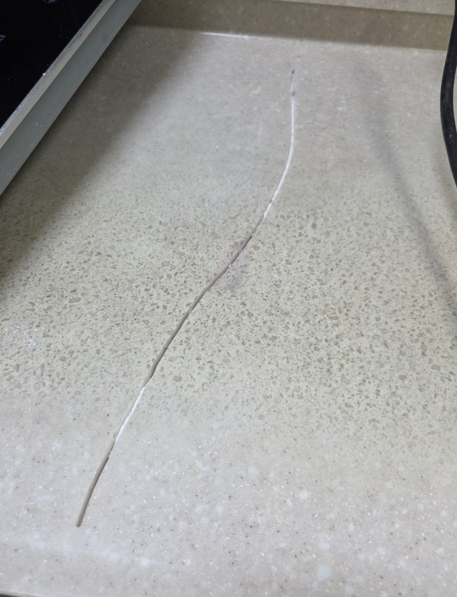
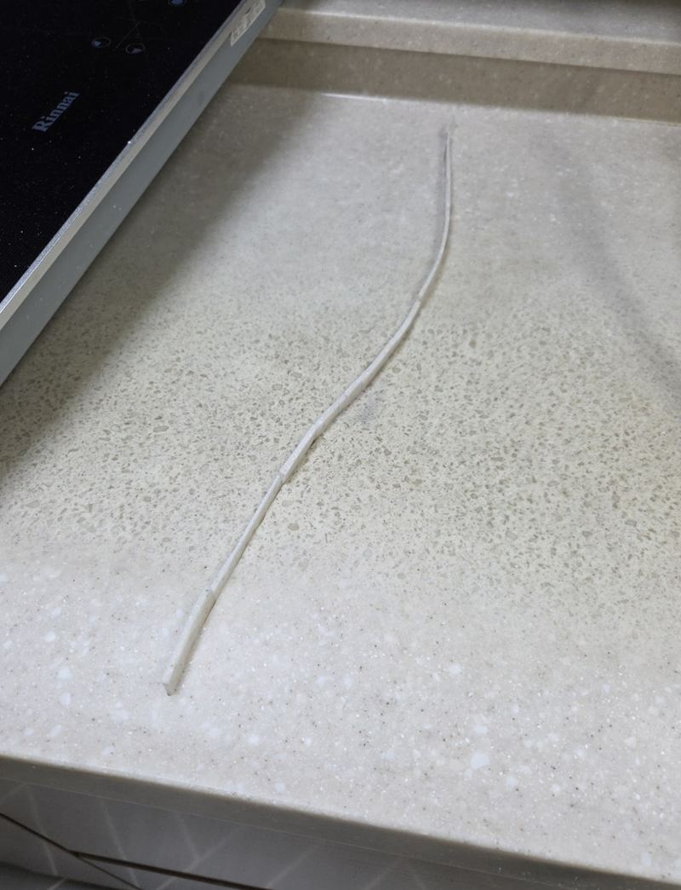
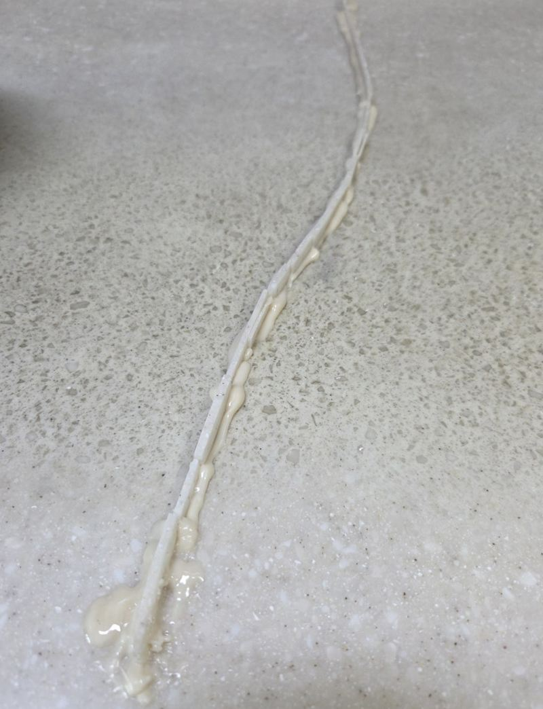

천안 균열 생긴 대리석 상판 부분 보수 방법
← 밀어서 전후 비교 →
천안 불당동 아파트 주방이었어요. 인덕션 옆 상판에 긴 금이 이어져 있었고, 일부 구간은 틈으로 때가 스며 검게 변해 있었어요. 고객분은 상판을 통째로 바꿔야 하는지 걱정하셨어요. 금은 길었지만 상판 몸체는 단단해서 부분 보수로 방향을 잡았어요. 손상 범위를 표시하고 트리머로 접착 길을 낸 뒤, 집에 남아 있던 자투리 자재를 이식해 붙이고 샌딩으로 높이를 맞췄어요.
| 현장 | 천안 서북구 불당동 아파트 주방 상판 |
|---|---|
| 증상 | 긴 균열이 이어지고 일부 구간 검은 변색 |
| 한 일 | 손상 범위 표시 → 트리머 컷팅 → 자투리 자재 재단·이식 → 본드 고정 → 경화 → 샌딩·높이 맞춤 → 변색 구간 추가 샌딩 |
| 재료 | 고객 댁에 남아 있던 같은 상판 자투리 |
본드만 바르면 안 되는 이유
금 간 자리에 겉에서 본드만 바르면 좁은 틈 안으로 들어가지 못하고 표면에만 남아요. 처음엔 붙은 것 같아도 무게가 실리면 다시 벌어지고, 그 틈으로 물과 때가 또 들어가요. 그래서 일부러 금을 따라 길을 내 접착제가 안쪽까지 들어가게 해야 해요. 상처를 더 내는 것 같지만, 오래 붙어 있게 하려는 과정이에요.


자투리 이식 보수 순서
범위 표시와 컷팅
어디까지 열지 먼저 정해 표시하고, 트리머로 금을 따라 잘라 냈어요. 처음에 범위를 잘 잡아야 보수 자리가 커지지 않아요.


자투리 이식
집에 남아 있던 같은 상판 자투리를 잘라 낸 자리 모양에 맞게 다듬어 끼웠어요. 같은 자재라 색과 무늬가 가장 가까워요.

본드 고정
본드를 채워 이식한 조각이 움직이지 않게 붙였어요. 조각 높이가 주변과 맞아야 샌딩 뒤 이질감이 덜해요.

샌딩
본드가 충분히 굳은 뒤 표면을 갈아 주변과 높이를 맞췄어요.
검게 변한 자리는요?
고객분이 변색된 구간도 정리되길 원하셔서 그 부분을 더 샌딩했어요. 오염이 겉에 머물렀다면 갈아 내면 많이 옅어져요. 다만 깊이 스며든 얼룩은 흔적이 남을 수 있어, 보수와 표면 정리를 함께 보는 게 좋아요.
마친 뒤 금이 다시 벌어지지 않는지, 손으로 쓸었을 때 걸리는 데가 없는지, 높이가 주변과 맞는지 확인했어요. 고객분은 "검게 변한 부분 때문에 볼 때마다 신경 쓰였는데 이만큼 정리돼서 다행"이라며, 전체 교체를 안 해도 돼 부담을 덜었다고 하셨어요.
상판 금이 커지는 원인
- 무거운 물건같은 자리에 무거운 가전이나 냄비를 계속 올려 두면 금이 벌어져요.
- 열뜨거운 냄비를 바로 올리면 한 곳에 열이 몰려요.
- 습기틈으로 물이 들어가면 때가 끼고 변색돼요.
- 방치가는 금일 때 손보면 보수 범위가 작아요.
부분 보수와 상판 교체 비교
- 부분 보수금이 한두 줄이고 몸체가 단단하면 범위가 작고 주방을 오래 비우지 않아도 돼요.
- 상판 교체여러 곳이 갈라지고 휘었거나 변색이 넓으면 교체가 나을 수 있어요.
- 판단 기준금 길이, 벌어진 폭, 아래 받침 상태를 보고 정해요.
상판 부분 보수 질문
자투리 자재가 없으면요?
색을 맞춘 보수재로 채워요. 같은 자재가 있으면 색과 무늬를 더 가깝게 맞출 수 있어요.
보수 자리가 보이나요?
가까이서 보면 선이 보일 수 있어요. 샌딩으로 높이와 결을 최대한 맞춰요.
상판이 들떠 있어요.
아래 받침이 약하면 보강을 함께 해야 다시 갈라지지 않아요.
인덕션 옆인데 괜찮나요?
열이 닿는 자리라 굳는 동안은 사용을 피해 주세요.
싱크볼 주변 금도 같은 방법인가요?
물이 많이 닿는 곳이라 실리콘 마감까지 함께 봐요.
먼지가 많이 나나요?
자르고 가는 작업이라 주변을 덮고 진행한 뒤 청소해요.
교체가 나은 경우는요?
여러 곳이 갈라지고 상판이 휘었다면 교체를 함께 비교해요.
다른 상판 복원 현장
상판 전체와 금 간 선, 변색된 부분을 찍어 보내 주세요.
전화 상담 010-4517-9872